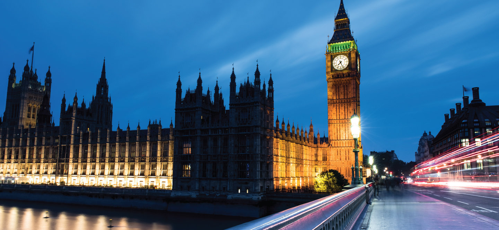

Algemeen
Londen is de hoofdstad en grootste stad van zowel Engeland als het Verenigd Koninkrijk. In de regio Groot-Londen, waarvan de begrenzing tegenwoordig vaak gelijk wordt gesteld aan die van de stad Londen, wonen ongeveer 7,5 miljoen mensen. Hiermee is Londen de stad met de meeste inwoners van de Europese Unie. De hele regio van de metropool strekt zich evenwel nog ver uit buiten de grenzen van Groot-Londen. De grenzen hiervan zijn niet gemakkelijk aan te geven, het aantal inwoners ligt tussen de 12 en 14 miljoen. De stad is, behalve de hoofdstad en de grootste stad van het Verenigd Koninkrijk, ook het politieke, economische en culturele centrum van dat land. Ook in Europa en de wereld vervult ze een belangrijke functie op diverse gebieden: Londen wordt als een van de vier traditionele alfa-wereldsteden beschouwd, samen met Parijs, Tokio en New York. Londen telt vier plaatsen die op de Werelderfgoedlijst van de UNESCO staan: de Tower of London, de historische nederzetting van Greenwich, de Kew Gardens, en een gezamenlijke inschrijving bestaande uit het Palace of Westminster, Westminster Abbey en Saint Margaret's Church.
Over de bevolking
In een grote stad als Londen is de bevolkingssamenstelling zeer divers. In de stad wonen meer dan 100 verschillende nationaliteiten en er worden meer dan 300 talen gesproken. Van alle inwoners van Londen is 32% buiten het Verenigd Koninkrijk geboren, van de inwoners van Inner London zelfs 39%. 69,4 procent van de 7,5 miljoen inwoners zijn blank. De grootste groep immigranten in Londen zijn Indiërs (6,5%), gevolgd door Bengalen en Pakistanen (beide 2,3%). In de tabel van de bevolking naar het land van herkomst is te zien dat veel etnische groepen afkomstig zijn uit het voormalige Britse Rijk.
Parken & pleinen
Londen is een stad met veel groene longen. Er zijn meer dan honderd parken, waarvan acht koninklijke. Elke buurt heeft wel een park. Ze variëren van klein tot zeer groot en van wild tot gecultiveerd. De grote parken worden zorgvuldig onderhouden. Het bekendste park is Hyde Park. Hier worden grote evenementen als Live 8 2005 en het buitengedeelte van de Last Night of the Proms georganiseerd.
Londen heeft een groot aantal pleinen, waarvan Piccadilly Circus, Trafalgar Square en Leicester Square de bekendste zijn. Piccadilly Circus is een belangrijk verkeersknooppunt, ontmoetingspunt en toeristische attractie. Het plein staat bekend om zijn lichtreclames en de fontein met het beeldje van Anteros, wiens uitbeelding vaak verward wordt met Anteros' tweelingbroer Eros.